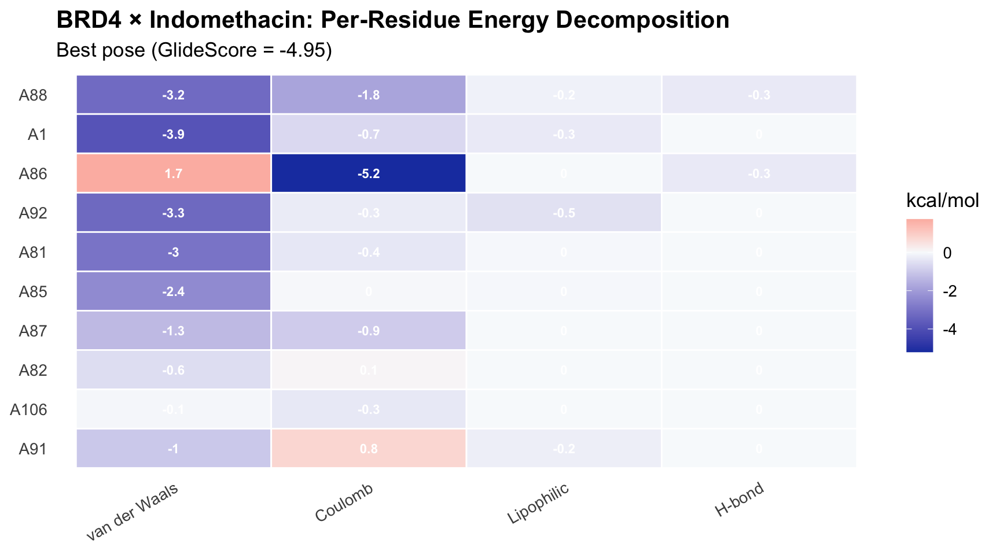
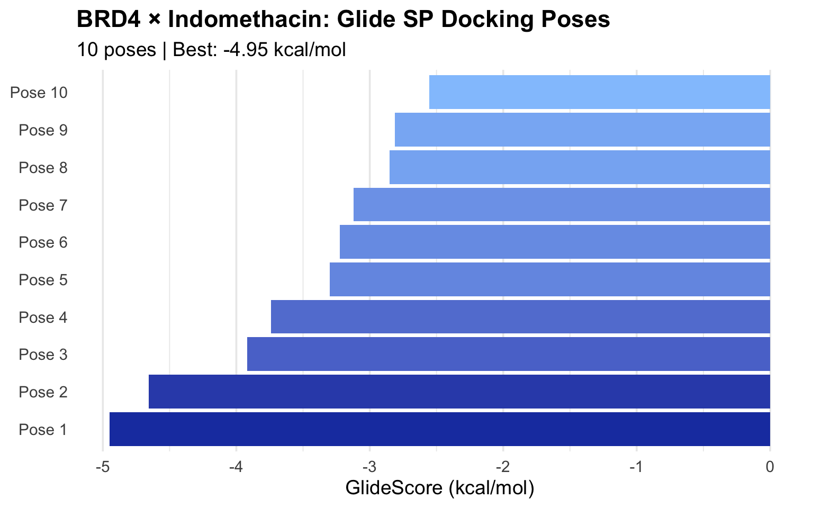
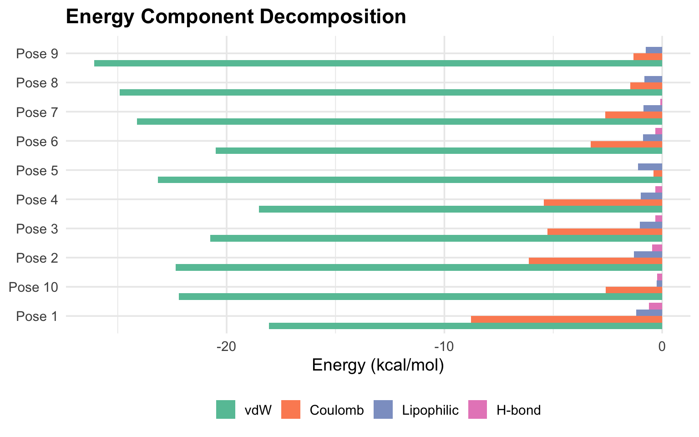

# 从本地安装
devtools::install_local("/tmp/task-agents/rschrodinger")rschrodinger: Schrödinger Data Bridge for R
从 .mae 文件到 tidy tibble，一行代码搞定
为什么需要这个包
Schrödinger 套件是药物发现的工业标准，但它的数据格式 .mae（Maestro）是个黑箱：
- 私有格式：不是 PDB、不是 SDF，主流 R 包（Bio3D、ChemmineR）都读不了
- Python 锁定：官方只提供 Python API，而且必须用
$SCHRODINGER/run启动 - 环境冲突：Schrödinger 的 Python 环境和系统 Python / conda 互相打架
rschrodinger 用三种策略解决这些问题：
| 函数 | 策略 | 依赖 Schrödinger? |
|---|---|---|
read_mae_fast() |
纯 R 状态机解析 | 不需要 |
get_protein_ligand_interactions() |
沙盒子进程 | 需要 |
poll_job_status() |
沙盒子进程 | 需要 |
安装
library(rschrodinger)
library(dplyr, warn.conflicts = FALSE)
library(tidyr)
library(ggplot2)1. 读取 .mae 文件 — read_mae_fast()
这是这个包的核心功能。零依赖，纯 R 实现，直接把 Maestro 文件变成 tidy tibble。
1.1 基本用法
# 包内自带的示例文件
mae_file <- system.file("extdata", "example.mae",
package = "rschrodinger", mustWork = TRUE
)
result <- read_mae_fast(mae_file)
result# A tibble: 1 × 19
title PDB_CRYST1_a PDB_CRYST1_b PDB_CRYST1_c PDB_CRYST1_alpha PDB_CRYST1_beta
<chr> <dbl> <dbl> <dbl> <dbl> <dbl>
1 3MXF 36.8 44.8 78.4 90 90
# ℹ 13 more variables: PDB_CRYST1_gamma <dbl>, PDB_CRYST1_z <int>,
# source_file_index <int>, PDB_TITLE <chr>, PDB_ID <chr>,
# PDB_CRYST1_Space_Group <chr>, PDB_CLASSIFICATION <chr>,
# PDB_DEPOSITION_DATE <chr>, PDB_format_version <chr>, source_file <chr>,
# ct_format <int>, `_ct_index` <int>, `_source_file` <chr>每一行是一个 CT（Connection Table） 块。对于 PrepWizard 输出的蛋白，通常只有 1 个 CT；对于 Glide docking 结果，每个 pose 是一个 CT。
1.2 读取 Glide Docking 结果
这才是真正有用的场景 — 从 _pv.maegz 文件中提取所有 docking scores：
# 真实的 Glide SP docking 结果（BRD4 × Indomethacin）
maegz_file <- "/tmp/task-agents/rschrodinger/context/testdata/BRD4_Indomethacin_SP_pv.maegz"
docking <- read_mae_fast(maegz_file)
cat("CT blocks:", nrow(docking), "\n")CT blocks: 11 cat("Properties:", ncol(docking), "\n")Properties: 326 326 个 properties — 这就是 .mae 格式的威力。每个 CT 块带上百个属性：GlideScore、力场分解、每个残基的相互作用能量。
1.3 提取关键 Docking Metrics
通常只需要几个核心 score。用 properties 参数精准提取：
scores <- read_mae_fast(
maegz_file,
properties = c("title", "glide_gscore", "docking_score", "glide_emodel",
"glide_lipo", "glide_hbond", "glide_evdw", "glide_ecoul")
)
# 过滤掉受体 CT（第一个块，没有 glide_gscore）
poses <- scores |>
filter(!is.na(glide_gscore)) |>
arrange(glide_gscore)
poses |>
select(title, glide_gscore, docking_score, glide_emodel)# A tibble: 10 × 4
title glide_gscore docking_score glide_emodel
<chr> <dbl> <dbl> <dbl>
1 Indomethacin -4.95 -4.95 -33.8
2 Indomethacin -4.66 -4.66 -35.2
3 Indomethacin -3.92 -3.92 -31.8
4 Indomethacin -3.74 -3.74 -29.0
5 Indomethacin -3.30 -3.30 -28.1
6 Indomethacin -3.23 -3.23 -28.0
7 Indomethacin -3.12 -3.12 -29.7
8 Indomethacin -2.85 -2.85 -26.6
9 Indomethacin -2.81 -2.81 -30.3
10 Indomethacin -2.55 -2.55 -28.61.4 Prefix 控制
.mae 属性名有类型前缀（r_i_glide_gscore、s_m_title），默认会被清理掉。需要保留原始名称时：
raw <- read_mae_fast(maegz_file, strip_prefix = FALSE)
grep("glide", names(raw), value = TRUE) |> head(8)[1] "b_glide_receptor" "i_glide_grid_version"
[3] "r_glide_gridbox_ligxrange" "r_glide_gridbox_ligyrange"
[5] "r_glide_gridbox_ligzrange" "r_glide_gridbox_xcent"
[7] "r_glide_gridbox_xrange" "r_glide_gridbox_ycent" 1.5 批量处理整个目录
一个目录下的所有 .mae/.maegz 文件打包读入：
tmp_dir <- tempdir()
file.copy(mae_file, file.path(tmp_dir, "protein_A.mae"), overwrite = TRUE)[1] TRUEfile.copy(mae_file, file.path(tmp_dir, "protein_B.mae"), overwrite = TRUE)[1] TRUEbatch <- read_mae_fast(tmp_dir)
batch |> select(`_source_file`, title)# A tibble: 2 × 2
`_source_file` title
<chr> <chr>
1 protein_A.mae 3MXF
2 protein_B.mae 3MXF 1.6 提取原子坐标
做结构分析时用 include_atoms = TRUE：
atoms <- read_mae_fast(mae_file, include_atoms = TRUE)
atom_df <- atoms$atoms[[1]]
cat("Atom count:", nrow(atom_df), "| Columns:", ncol(atom_df), "\n")Atom count: 3 | Columns: 38 head(atom_df, 3)# A tibble: 3 × 38
`_index` i_m_mmod_type r_m_x_coord r_m_y_coord r_m_z_coord i_m_residue_number
<chr> <chr> <chr> <chr> <chr> <chr>
1 1 35 35.982000 2.596000 6.329000 42
2 2 4 36.117000 4.047000 6.696000 42
3 3 2 34.894000 4.588000 7.430000 42
# ℹ 32 more variables: s_m_mmod_res <chr>, s_m_chain_name <chr>,
# i_m_color <chr>, s_m_pdb_residue_name <chr>, s_m_pdb_atom_name <chr>,
# i_m_atomic_number <chr>, i_m_formal_charge <chr>, s_m_color_rgb <chr>,
# i_m_secondary_structure <chr>, r_m_pdb_occupancy <chr>,
# r_m_pdb_tfactor <chr>, i_pdb_PDB_serial <chr>, r_m_alt_pdb_occupancy <chr>,
# r_m_alt_pdb_tfactor <chr>, r_m_alt_x_coord <chr>, r_m_alt_y_coord <chr>,
# r_m_alt_z_coord <chr>, r_pdb_alt_occupancy_A <chr>, …2. 残基级相互作用分析
Glide docking 的 _pv.maegz 文件里已经包含了残基级相互作用数据（258 列）。不需要 Schrödinger，直接提取：
# 读取完整数据
full <- read_mae_fast(maegz_file, strip_prefix = FALSE)
# 提取 best pose
best_idx <- which.min(full$r_i_glide_gscore)
best_pose <- full[best_idx, ]
cat("Best pose GlideScore:", round(best_pose$r_i_glide_gscore, 2), "\n")Best pose GlideScore: -4.95 # 收集所有残基的 Eint（总相互作用能）
eint_cols <- grep("^r_glide_res:.*_Eint$", names(best_pose), value = TRUE)
eint_vals <- unlist(best_pose[, eint_cols])
residues <- gsub("r_glide_res:|_Eint", "", names(eint_vals))
names(eint_vals) <- residues
# 过滤有意义的相互作用
sig_interactions <- sort(eint_vals[!is.na(eint_vals) & abs(eint_vals) > 0.1])
interaction_df <- tibble(
residue = names(sig_interactions),
eint = as.numeric(sig_interactions)
) |>
arrange(eint)
interaction_df# A tibble: 17 × 2
residue eint
<chr> <dbl>
1 A88 -5.33
2 A1 -4.53
3 A86 -3.78
4 A92 -3.57
5 A81 -3.36
6 A85 -2.41
7 A87 -2.22
8 A82 -0.478
9 A106 -0.383
10 A91 -0.248
11 A84 -0.194
12 A90 -0.122
13 A94 -0.104
14 A145 0.176
15 A151 0.188
16 A96 0.224
17 A144 0.2662.1 残基相互作用热图
# 对 Top 10 残基做力场分解
top_res <- head(interaction_df$residue, 10)
decomp_data <- lapply(top_res, \(res) {
tibble(
residue = res,
vdw = as.numeric(best_pose[[paste0("r_glide_res:", res, "_vdw")]]),
coul = as.numeric(best_pose[[paste0("r_glide_res:", res, "_coul")]]),
hbond = as.numeric(best_pose[[paste0("r_glide_res:", res, "_hbond")]]),
lipo = as.numeric(best_pose[[paste0("r_glide_res:", res, "_lipo")]])
)
}) |> bind_rows()
decomp_long <- decomp_data |>
pivot_longer(-residue, names_to = "component", values_to = "energy") |>
mutate(
component = factor(component,
levels = c("vdw", "coul", "lipo", "hbond"),
labels = c("van der Waals", "Coulomb", "Lipophilic", "H-bond")
),
residue = factor(residue, levels = rev(top_res))
)
ggplot(decomp_long, aes(x = component, y = residue, fill = energy)) +
geom_tile(color = "white", linewidth = 0.5) +
geom_text(aes(label = round(energy, 1)),
size = 3, color = "white", fontface = "bold"
) +
scale_fill_gradient2(
low = "#1e40af", mid = "#f8fafc", high = "#dc2626",
midpoint = 0, name = "kcal/mol"
) +
labs(
title = "BRD4 × Indomethacin: Per-Residue Energy Decomposition",
subtitle = paste0("Best pose (GlideScore = ",
round(best_pose$r_i_glide_gscore, 2), ")"),
x = NULL, y = NULL
) +
theme_minimal(base_size = 13) +
theme(
plot.title = element_text(face = "bold"),
panel.grid = element_blank(),
axis.text.x = element_text(angle = 30, hjust = 1)
)
2.2 用 get_protein_ligand_interactions() 做更细致的分析
上面的方法直接从已有数据提取。如果需要从任意 complex 结构做 de novo 相互作用分析（比如 MD 轨迹 snapshot），用 Schrödinger API 版本：
# 需要 Schrödinger 安装
Sys.setenv(SCHRODINGER = "/opt/schrodinger2024-1")
interactions <- get_protein_ligand_interactions("my_complex.mae")
interactions返回结构如下（mock 示例）：
# A tibble: 5 × 5
interaction_type residue atom_protein atom_ligand distance
<chr> <chr> <chr> <chr> <dbl>
1 hydrogen_bond ASN140A ND2 O1 2.89
2 hydrogen_bond TYR97A OH O2 3.12
3 close_contact TRP81A CE2 C8 3.45
4 close_contact LEU92A CD1 C12 3.67
5 close_contact PHE83A CE1 C3 3.783. 作业监控 — poll_job_status()
提交 Glide/Prime/Desmond 作业后查询状态：
# 单次查询
status <- poll_job_status("glide_SP_12345")
status$status # "running" / "completed" / "failed"
# 阻塞等待（适合脚本自动化）
result <- poll_job_status(
"desmond_md_67890",
wait = TRUE,
timeout = 7200, # 最多等 2 小时
interval = 60 # 每分钟查一次
)返回结构：
$status
[1] "completed"
$job_id
[1] "glide_SP_12345"
$details
$details$status
[1] "completed"
$details$name
[1] "BRD4_Indomethacin_SP"
$details$program
[1] "glide"
$details$launch_time
[1] "2026-04-17 14:30:00"
$details$duration
[1] 342实战 Pipeline：Glide Docking 全景分析
把上面的功能串成一个完整的分析流程：
# Step 1: 读取 + 排序
poses <- read_mae_fast(maegz_file) |>
filter(!is.na(glide_gscore)) |>
mutate(label = paste0("Pose ", row_number())) |>
arrange(glide_gscore)
# Step 2: Score 排名可视化
ggplot(poses, aes(x = reorder(label, glide_gscore), y = glide_gscore)) +
geom_col(aes(fill = glide_gscore), show.legend = FALSE) +
scale_fill_gradient(low = "#1e40af", high = "#93c5fd") +
coord_flip() +
labs(
title = "BRD4 × Indomethacin: Glide SP Docking Poses",
subtitle = paste0("10 poses | Best: ",
round(min(poses$glide_gscore), 2), " kcal/mol"),
x = NULL, y = "GlideScore (kcal/mol)"
) +
theme_minimal(base_size = 14) +
theme(
plot.title = element_text(face = "bold"),
panel.grid.major.y = element_blank()
)
# Step 3: 力场分解对比
energy_data <- poses |>
select(label, glide_lipo, glide_hbond, glide_evdw, glide_ecoul) |>
pivot_longer(-label, names_to = "component", values_to = "energy") |>
mutate(component = factor(
gsub("glide_", "", component),
levels = c("evdw", "ecoul", "lipo", "hbond"),
labels = c("vdW", "Coulomb", "Lipophilic", "H-bond")
))
ggplot(energy_data, aes(x = label, y = energy, fill = component)) +
geom_col(position = "dodge") +
scale_fill_brewer(palette = "Set2") +
coord_flip() +
labs(
title = "Energy Component Decomposition",
x = NULL, y = "Energy (kcal/mol)", fill = NULL
) +
theme_minimal(base_size = 14) +
theme(
plot.title = element_text(face = "bold"),
legend.position = "bottom"
)
Ground Truth 验证
Glide 同时输出 CSV 和 .maegz，用 CSV 验证解析器的准确性：
csv_file <- "/tmp/task-agents/rschrodinger/context/testdata/BRD4_Indomethacin_SP.csv"
csv_data <- read.csv(csv_file)
csv_scores <- sort(round(csv_data$r_i_glide_gscore, 3))
mae_scores <- sort(round(poses$glide_gscore, 3))
cat("CSV: ", csv_scores, "\n")CSV: -4.949 -4.657 -3.917 -3.74 -3.298 -3.225 -3.122 -2.851 -2.811 -2.554 cat("MAE: ", mae_scores, "\n")MAE: -4.949 -4.657 -3.917 -3.74 -3.298 -3.225 -3.122 -2.851 -2.811 -2.554 cat("Match:", identical(csv_scores, mae_scores), "\n")Match: TRUE 设计哲学
为什么纯 R 而不是 Rcpp？
.mae 是文本格式。R 的字符串处理完全够用，C++ 增加编译依赖，在 HPC 上部署困难。
为什么用子进程而不是 reticulate？
Schrödinger Python 绑定了自己的 NumPy/OpenMM，和 conda 冲突。processx 起干净子进程，JSON 传数据，零 ABI 风险。
Type Prefix 自动转换
| 前缀 | 类型 | R 类型 |
|---|---|---|
s_ |
string | character |
r_ |
real | numeric |
i_ |
integer | integer |
b_ |
boolean | logical |
Session Info
sessionInfo()R version 4.5.1 (2025-06-13)
Platform: x86_64-apple-darwin20
Running under: macOS Sequoia 15.5
Matrix products: default
BLAS: /Library/Frameworks/R.framework/Versions/4.5-x86_64/Resources/lib/libRblas.0.dylib
LAPACK: /Library/Frameworks/R.framework/Versions/4.5-x86_64/Resources/lib/libRlapack.dylib; LAPACK version 3.12.1
locale:
[1] en_US.UTF-8/en_US.UTF-8/en_US.UTF-8/C/en_US.UTF-8/en_US.UTF-8
time zone: Asia/Macau
tzcode source: internal
attached base packages:
[1] stats graphics grDevices utils datasets methods base
other attached packages:
[1] ggplot2_4.0.2 tidyr_1.3.2 dplyr_1.2.1 rschrodinger_0.1.0
[5] pushoverr_1.1.0
loaded via a namespace (and not attached):
[1] gtable_0.3.6 jsonlite_2.0.0 compiler_4.5.1 tidyselect_1.2.1
[5] parallel_4.5.1 scales_1.4.0 yaml_2.3.12 fastmap_1.2.0
[9] R6_2.6.1 labeling_0.4.3 generics_0.1.4 httr2_1.2.2
[13] knitr_1.51 htmlwidgets_1.6.4 tibble_3.3.1 ellmer_0.4.0
[17] pillar_1.11.1 RColorBrewer_1.1-3 rlang_1.2.0 utf8_1.2.6
[21] xfun_0.57 S7_0.2.1 otel_0.2.0 cli_3.6.6
[25] withr_3.0.2 magrittr_2.0.5 digest_0.6.39 grid_4.5.1
[29] rappdirs_0.3.4 lifecycle_1.0.5 coro_1.1.0 vctrs_0.7.2
[33] evaluate_1.0.5 glue_1.8.0 farver_2.1.2 rmarkdown_2.31
[37] purrr_1.2.2 tools_4.5.1 pkgconfig_2.0.3 htmltools_0.5.9